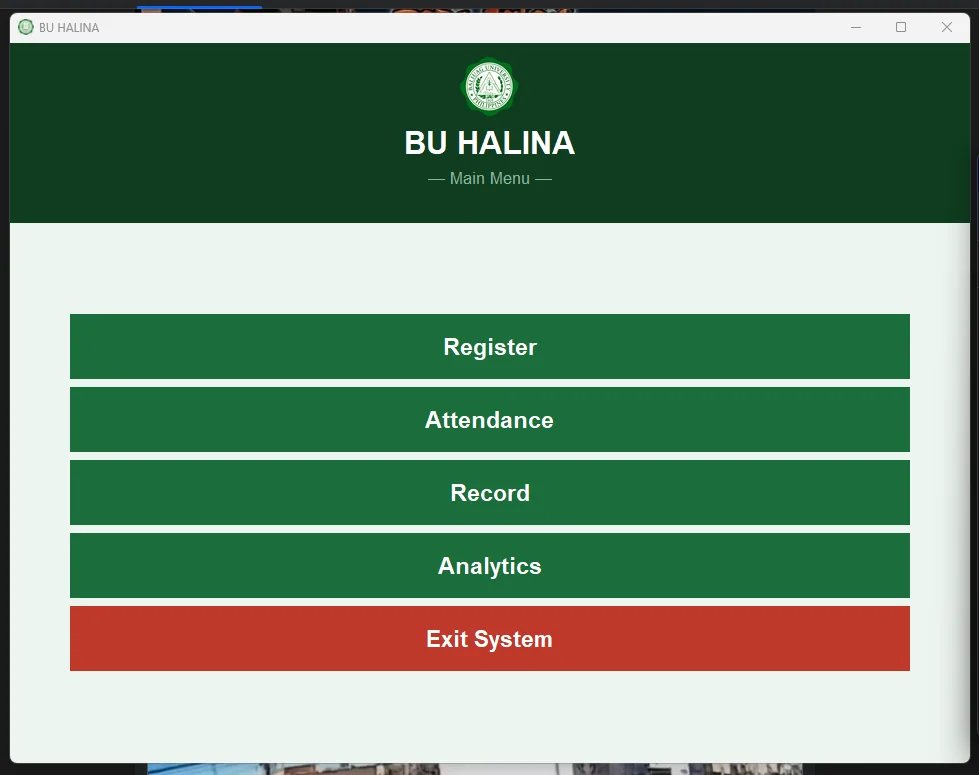
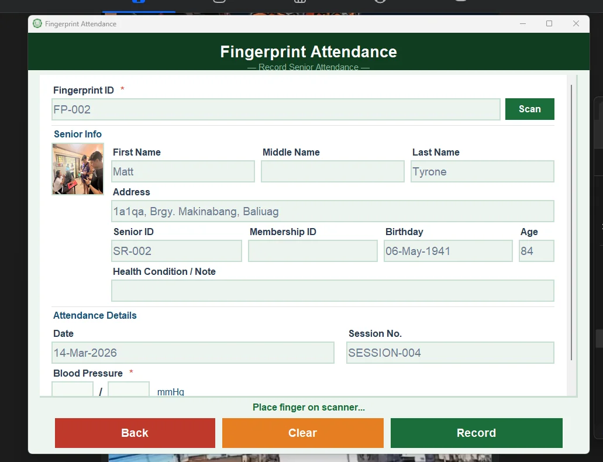
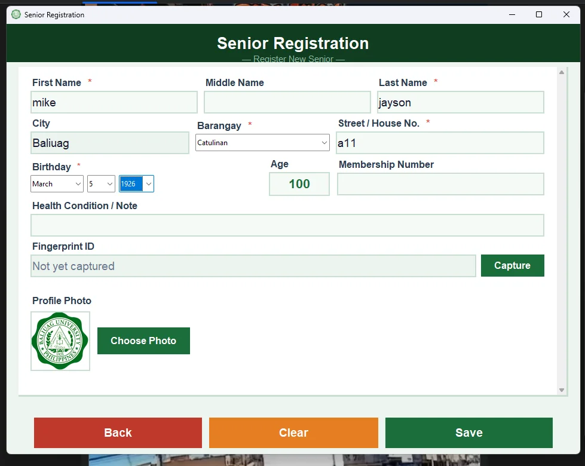
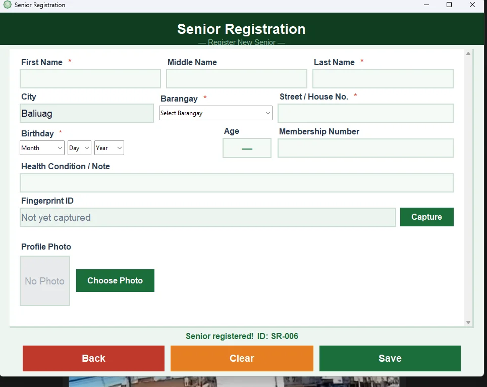
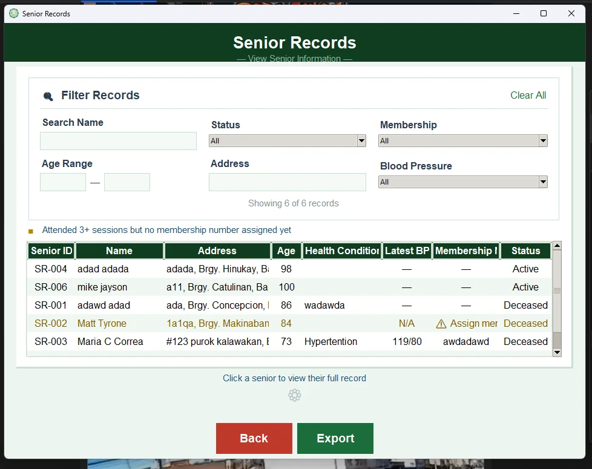
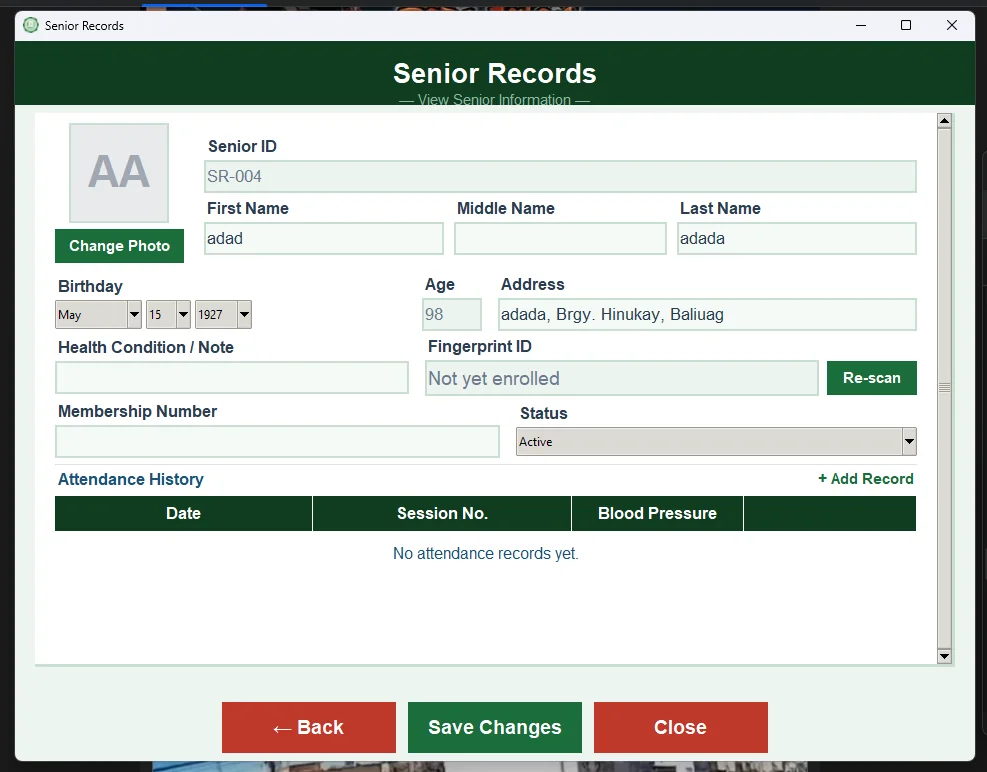
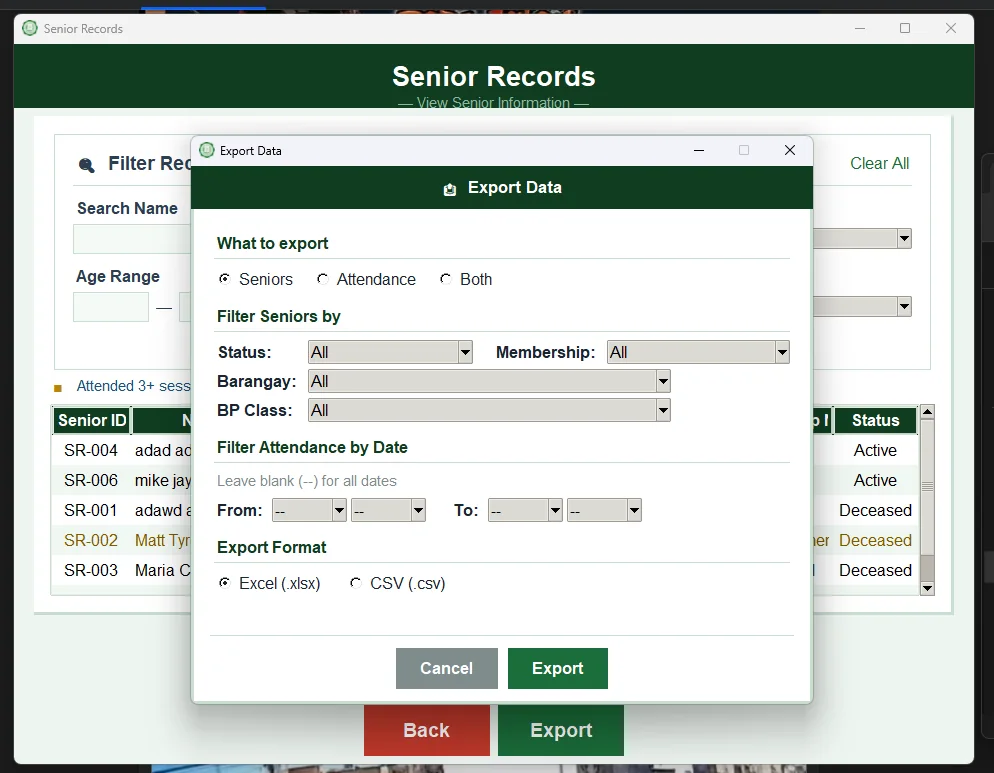
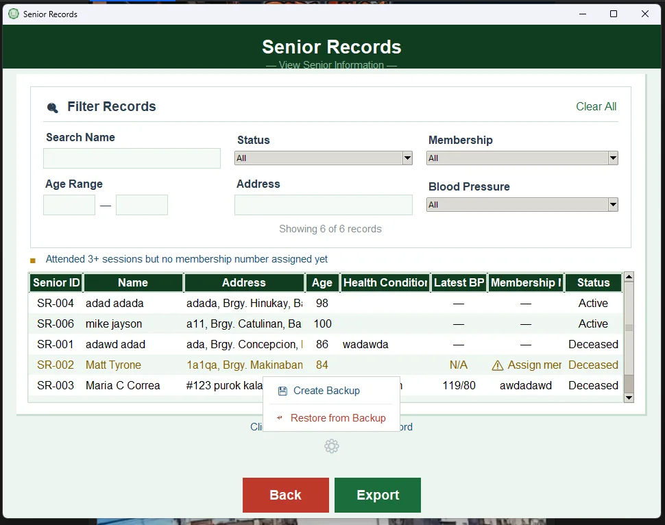
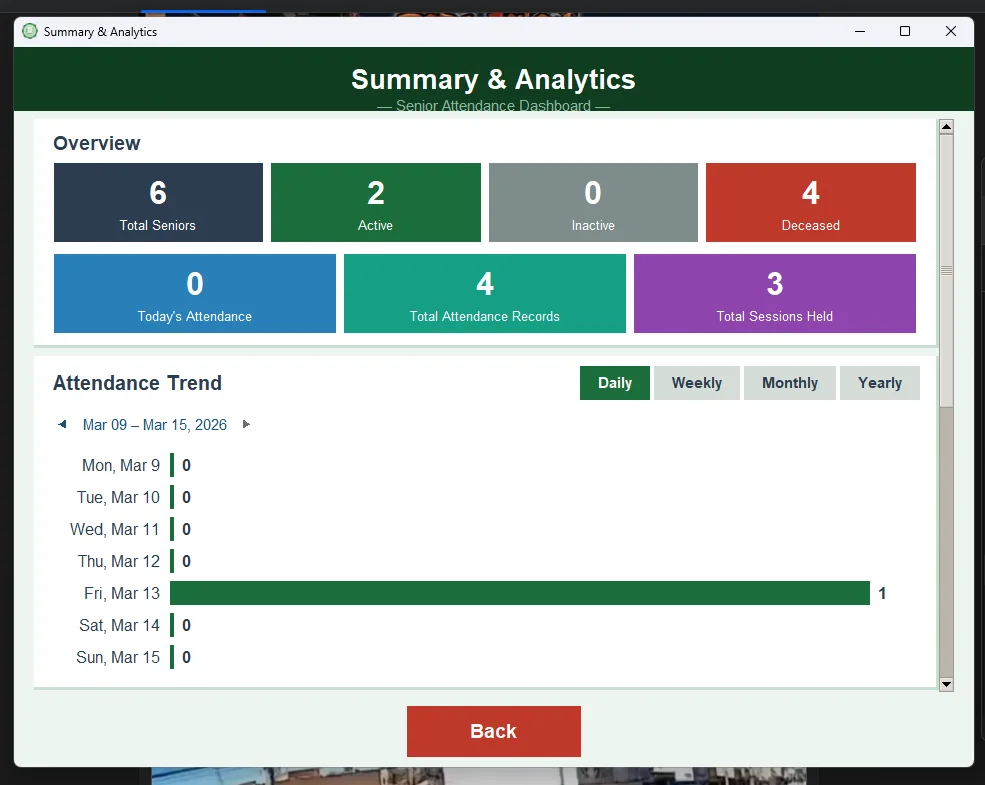
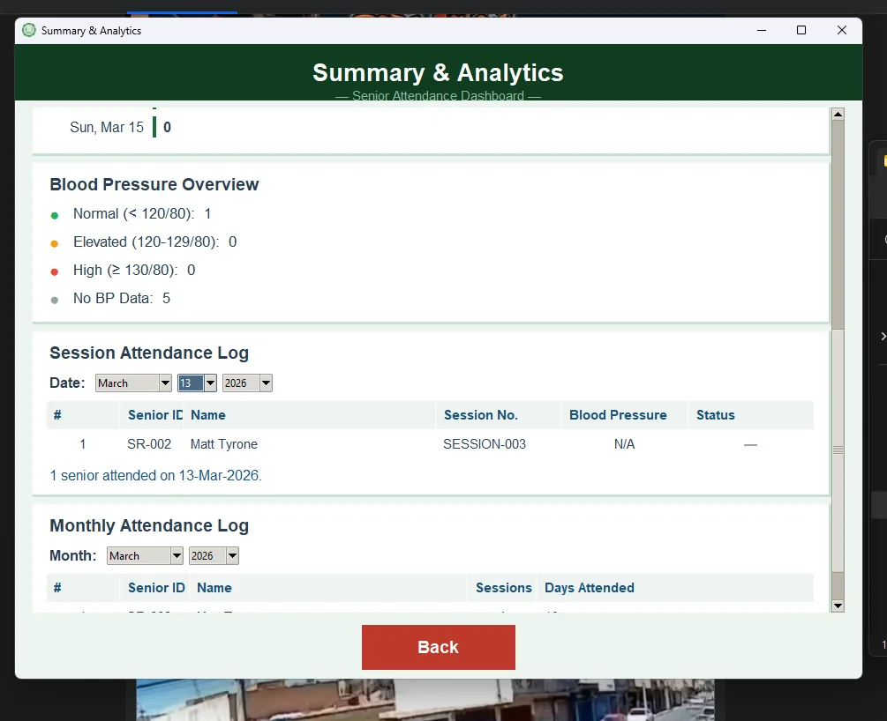

BU Healthy Aging
Client-approvedOne finger on the scanner, and the senior is checked in.


Attendance, recorded in seconds.
A standalone desktop system (BU HALINA) that registers senior citizens with their fingerprint, records attendance per session, and turns the records into reports the program staff can actually use.
It runs fully offline: no internet connection needed, and every record stays in a local database on the computer.
I built it end to end on my own: the fingerprint scanner integration, the database, every screen, the exports and analytics, and a Windows installer so staff can set it up without me.
What I did
From registration to report.
Four big buttons, on purpose
Register, Attendance, Record and Analytics. The people using it are program staff, so every task is one obvious click from the start screen.

Register a senior, capture their fingerprint
Name, barangay, birthday, health notes and a profile photo. Age is computed from the birthday, and the Capture button enrolls the fingerprint right on the form.
- Required fields are clearly marked
- Barangay picked from a list, not typed

A Senior ID on save
Each senior gets an ID (SR-006 here) and the form clears for the next person in line.
Scan, identify, record
The senior places a finger on the scanner, the system finds their record and fills in their details, and staff add the session and blood pressure reading before recording it.

Find anyone in seconds
Filter by name, status, membership, age range, address and blood pressure class. Seniors who attended three or more sessions without a membership number are flagged.

Edit a record, re-scan a fingerprint
Each senior's page holds their details, status, attendance history, and a Re-scan button if a fingerprint needs to be enrolled again.

Export to Excel or CSV
Export seniors, attendance or both, filtered by status, membership, barangay, BP class and date range.

Backup and restore built in
Staff can create a backup of the records and restore from it, right from the records screen.
Numbers the program can report on.
A summary dashboard counts active, inactive and deceased seniors, today's attendance and sessions held, with an attendance trend by day, week, month or year. Below it: a blood pressure overview and per-session and monthly attendance logs.

